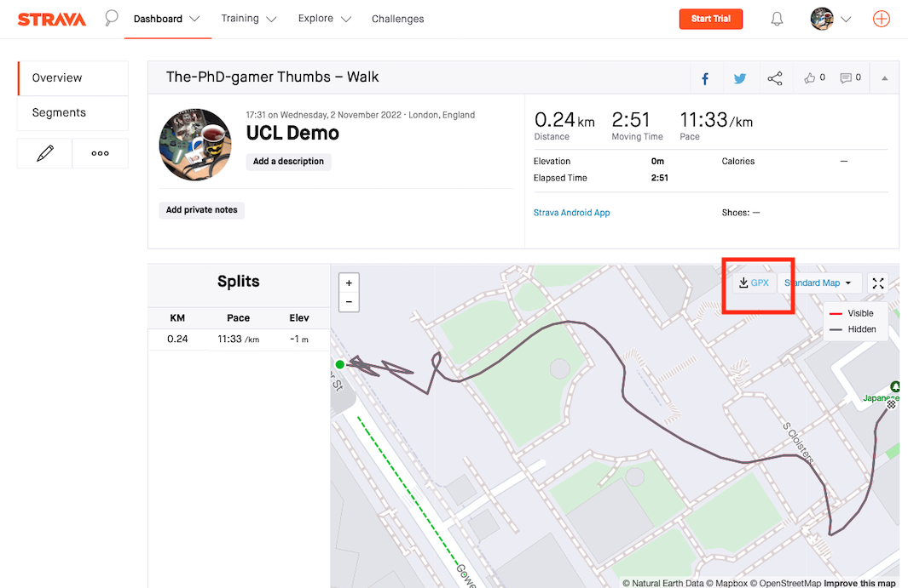

Part 1: Data Collection for Field Trip
Preparation for the field trip
Please make sure to go through the BCN-Urban Project Worksheet as it contains the key objectives of the field activity. For the Barcelona (or London) Urban Project, you will need to bring your worksheet, field notebook (i.e., diary) and smartphone.
The section here contains some guidance notes for fulfilling the objectives related to tracking your routes and geo-tagging with the smartphone. Here’s a things-to-do list before going out on to the field:
- Install Strava onto at least one group member’s smartphone – this is for the route data collection.
- Install Google Earth onto at least one group member’s smartphone - this is for recording the GPS coordinates for the point observations in accordance with your theme (e.g. street vendor locations, graffiti, Catalan flags, cyclists, and other locations that may pique your interest).
- Try the apps out for yourself for familiarity.
IMPORTANT NOTE: You will need the two apps to collect your data in Barcelona or London. Please make note that the collection of data is a team effort. The more people in the group who install these apps, as well as being engaged with the data collection, the better, and the less chance of something going wrong in the field.
Training materials for Google Earth & Strava app
The table below contains all the information needed to get you started with using the smartphone apps.
| Guidance | Google Earth App | Strava App |
|---|---|---|
| [1] How to install apps on smartphone | Notes, Video | Notes, Video |
| [2] How to collect point or route data | Notes, Video | Notes, Video |
NOTE 1 on installation for iPhone users: At the time of making these tutorials - the content creator was a proud owner of a Samsung Android phone and did not have access to an iPhone. So the steps for installation and steps were designed and demonstrated for Android phones. Therefore, iPhone - you can install the applications accordingly, but the steps my vary - but don’t worry - the steps and set-up on how to do things in an iPhone are highly intuitive and akin to that of an Android phone.
NOTE 2 on data collection for pictures: When geo-tagging points of interest, and penning the associated notes into diaries, pictures, videos, or audio footage. There has to be a link between the points and collected dataset so you know what information corresponds to each other. We recommend that you apply some reference number for the location with coordinates you geo-tagged (e.g., “site 1” or “S1” and the next will be “site 2” or “S2” etc.,) and then annotate you notes, pictures, videos or audio footage with the same reference number so you know which data corresponds with each other.
You can do this with your phones through screenshots and applying some text to it. Here is a crude example (see image below):
Revisiting the location in London where the 1854 Cholera epidemic was pronounced

What to do next with the collected data?
[1] Downloading your route data
Once you have finished using Strava, and saved the routes. Downloading your route data from Strava is simple. Here are the steps:
- Go to https://www.strava.com and log into your user account (i.e., the one you created earlier on when you installed the app)

- You will log in and see your dashboard. Select your route shown in the home feed.

- You should be able to download you route data by clicking on the “GPX” highlighted in the image below. We will use this data for the workshop. 
[2] Compiling you geo-tagged data into a spreadsheet
You should compile your geo-tagged data into a spreadsheet and save it as a comma separated value format (.csv). We highly encouraged you work as a group in compiling your dataset together. Here are the steps:
- Create a new spreadsheet in Excel. Create three columns marked `siteID’, ‘latitude’ and ‘longitude’.
- Input details of the points of interest you recorded in Barcelona/London into a spreadsheet. To do this you will need to look at your field diary and also any screenshots you took. Make sure that the lat/long coordinates for each site are accurately recorded. Any qualitative information about each site you recorded (e.g. its type, other observations) can also be recorded in a fourth column if you want.
- Your dataset should end up looking like the screenshot below. Remember that we expect each group to have at least 20 site observations (- the more point, the more interesting your map will look!). Save your work as a .csv file.

WARNING: When recording your coordinates to a spreadsheet, be mindful of whether a latitude is north (N) or south (S), or a longitude is east (E) or (W). The latitudes for London and Barcelona all fall above the equator (N) and so they should always be a positive value. However, London and Barcelona are very close to the Prime Meridian, and so their longitudes can potentially fall either above (E) or below (W) the Prime Meridian. If the longitude is below the Prime Meridian (W) then add a minus sign to that value.
IMPORTANT NOTE: You can compile the data in the comfort of your hotel or when you are back in London. Just make sure you don’t lose all your hard work!